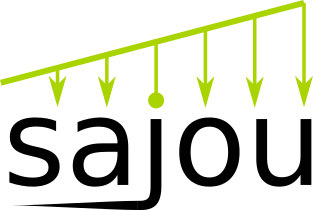

Sajou 
0.1
Installation instructions
Quick start
Tutorial
Documentation
Python API reference
Sajou
Docs
»
Index
Index
_
|
A
|
B
|
C
|
D
|
E
|
F
|
G
|
L
|
M
|
N
|
P
|
R
|
S
|
T
_
_beam_section (sajou.elements.beam2d.Beam2D attribute)
_dimensionality (sajou.model.Model attribute)
_dof_dirichlet (sajou.solvers.Solver attribute)
_K (sajou.solvers.Solver attribute)
_k_size (sajou.elements.beam2d.Beam2D attribute)
_Ke (sajou.elements.beam2d.Beam2D attribute)
_length (sajou.elements.beam2d.Beam2D attribute)
_load_vector_e (sajou.elements.beam2d.Beam2D attribute)
_loads (sajou.elements.beam2d.Beam2D attribute)
_localCSys (sajou.elements.beam2d.Beam2D attribute)
_name (sajou.model.Model attribute)
_nfmt (sajou.solvers.Solver attribute)
_nodal_connectivity (sajou.elements.beam2d.Beam2D attribute)
_P (sajou.solvers.Solver attribute)
_poly_sec_force (sajou.elements.beam2d.Beam2D attribute)
_V (sajou.solvers.Solver attribute)
A
add_hinge() (sajou.model.Model method)
(sajou.nodes.Node method)
add_metadata() (sajou.solvers.Result method)
add_result() (sajou.solvers.Result method)
append_element() (sajou.nodes.Node method)
assemble_K() (sajou.elements.beam3d.Beam3D method)
assemble_Ke() (sajou.elements.beam2d.Beam2D method)
(sajou.elements.spring2d.Spring2D method)
assign_elastic_constant() (sajou.elements.spring2d.Spring2D method)
assign_section() (sajou.elements.beam2d.Beam2D method)
B
bc() (sajou.model.Model method)
beam() (sajou.model.Model2D method)
(sajou.model.Model3D method)
Beam2D (class in sajou.elements.beam2d)
Beam3D (class in sajou.elements.beam3d)
beam_section() (sajou.model.Model method)
beam_sections (sajou.model.Model attribute)
beams (sajou.model.Model attribute)
BeamSection (class in sajou.sections)
C
calc_all_deflections() (sajou.postprocessing.Postprocess method)
calc_all_internal_forces() (sajou.postprocessing.Postprocess method)
calc_area() (sajou.sections.BeamSection method)
calc_axial_at() (sajou.postprocessing.Postprocess method)
calc_end_forces() (sajou.solvers.StaticSolver method)
calc_inertia() (sajou.sections.BeamSection method)
calc_internal_force_element() (sajou.postprocessing.Postprocess method)
calc_moment_at() (sajou.postprocessing.Postprocess method)
calc_nodal_displ() (sajou.solvers.StaticSolver method)
calc_nodal_forces() (sajou.solvers.StaticSolver method)
calc_nodal_reactions() (sajou.solvers.StaticSolver method)
calc_node_new_coord() (sajou.postprocessing.Postprocess method)
calc_shear_at() (sajou.postprocessing.Postprocess method)
calc_transformation_matrix() (sajou.utils.CoordSys method)
compute_properties() (sajou.sections.BeamSection method)
CoordSys (class in sajou.utils)
D
Display (class in sajou.plot.display)
Display_mpl (class in sajou.plot.display)
distributed_load() (sajou.elements.beam2d.Beam2D method)
(sajou.model.Model2D method)
distributed_moment() (sajou.elements.beam2d.Beam2D method)
DistributedLoad (class in sajou.loads)
DistributedMoment (class in sajou.loads)
E
efs (sajou.elements.beam2d.Beam2D attribute)
(sajou.elements.spring2d.Spring2D attribute)
Element (class in sajou.elements.element)
export_model_data() (sajou.model.Model method)
F
filled_markers (sajou.plot.markers_mpl.MarkerStyle attribute)
fillstyles (sajou.plot.markers_mpl.MarkerStyle attribute)
from_cart_to_cylindric() (sajou.utils.CoordSys method)
from_cylindric_to_cart() (sajou.utils.CoordSys method)
G
get_dataframe_of_node_coords() (in module sajou.model)
get_deformed_node_coords() (in module sajou.plot.display)
get_element_active_dof() (sajou.elements.element.Element method)
get_element_deformed_node_coords() (in module sajou.plot.display)
get_node_active_dof() (sajou.elements.element.Element method)
get_node_and_dof() (sajou.solvers.Solver method)
get_node_coords() (in module sajou.model)
L
Line2D (class in sajou.plot.lines_mpl)
Load (class in sajou.loads)
load() (sajou.model.Model method)
Local_Csys_two_points (class in sajou.utils)
M
markers (sajou.plot.lines_mpl.Line2D attribute)
(sajou.plot.markers_mpl.MarkerStyle attribute)
,
[1]
markers_custom (sajou.plot.markers_mpl.MarkerStyle attribute)
MarkerStyle (class in sajou.plot.markers_mpl)
Material (class in sajou.materials)
material() (sajou.model.Model method)
materials (sajou.model.Model attribute)
Model (class in sajou.model)
Model2D (class in sajou.model)
Model3D (class in sajou.model)
ModelData (class in sajou.model)
N
n_active_dof (sajou.elements.beam2d.Beam2D attribute)
(sajou.elements.spring2d.Spring2D attribute)
n_dimensions (sajou.model.Model attribute)
(sajou.model.Model2D attribute)
n_dof_per_node (sajou.model.Model attribute)
(sajou.model.Model2D attribute)
(sajou.solvers.Solver attribute)
n_elements (sajou.model.Model attribute)
n_materials (sajou.model.Model attribute)
n_nodes (sajou.model.Model attribute)
nefmt (sajou.elements.beam2d.Beam2D attribute)
(sajou.elements.spring2d.Spring2D attribute)
nfat (sajou.solvers.Solver attribute)
Node (class in sajou.nodes)
node() (sajou.model.Model2D method)
(sajou.model.Model3D method)
node1 (sajou.elements.beam2d.Beam2D attribute)
(sajou.elements.spring2d.Spring2D attribute)
node2 (sajou.elements.beam2d.Beam2D attribute)
(sajou.elements.spring2d.Spring2D attribute)
Node2D (class in sajou.nodes)
nodes (sajou.model.Model attribute)
P
plot_beam2d() (in module sajou.plot.plot_elements_mpl)
plot_deformed_beam2d() (in module sajou.plot.plot_elements_mpl)
plot_deformed_element() (sajou.plot.display.Display_mpl method)
plot_deformed_geometry() (sajou.plot.display.Display_mpl method)
plot_element() (in module sajou.plot.plot_elements_mpl)
plot_element_loads() (sajou.plot.display.Display_mpl method)
plot_geometry() (sajou.plot.display.Display_mpl method)
plot_internal_forces() (sajou.plot.display.Display_mpl method)
plot_nodal_force() (sajou.plot.display.Display_mpl method)
plot_nodal_reaction() (sajou.plot.display.Display_mpl method)
plot_spring2d() (in module sajou.plot.plot_elements_mpl)
plot_support() (sajou.plot.display.Display_mpl method)
Postprocess (class in sajou.postprocessing)
postprocess() (sajou.solvers.StaticSolver method)
print_properties() (sajou.sections.BeamSection method)
R
range_with_ratio() (in module sajou.plot.display)
release_end() (sajou.elements.beam2d.Beam2D method)
release_end_1 (sajou.elements.beam2d.Beam2D attribute)
release_end_2 (sajou.elements.beam2d.Beam2D attribute)
Result (class in sajou.solvers)
S
sajou (module)
,
[1]
sajou.elements (module)
sajou.elements.beam2d (module)
sajou.elements.beam3d (module)
sajou.elements.element (module)
sajou.elements.spring2d (module)
sajou.loads (module)
sajou.materials (module)
sajou.model (module)
sajou.nodes (module)
sajou.plot (module)
sajou.plot.display (module)
sajou.plot.lines_mpl (module)
sajou.plot.markers_mpl (module)
sajou.plot.plot_elements_mpl (module)
sajou.postprocessing (module)
sajou.sections (module)
sajou.solvers (module)
sajou.utils (module)
set_BC() (sajou.nodes.Node method)
set_Load() (sajou.nodes.Node method)
solve() (sajou.solvers.StaticSolver method)
Solver (class in sajou.solvers)
spring() (sajou.model.Model2D method)
Spring2D (class in sajou.elements.spring2d)
StaticSolver (class in sajou.solvers)
T
transformation_matrix (sajou.elements.beam2d.Beam2D attribute)
(sajou.elements.spring2d.Spring2D attribute)